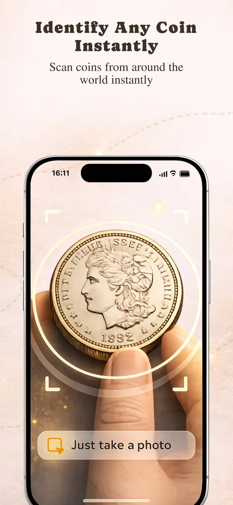
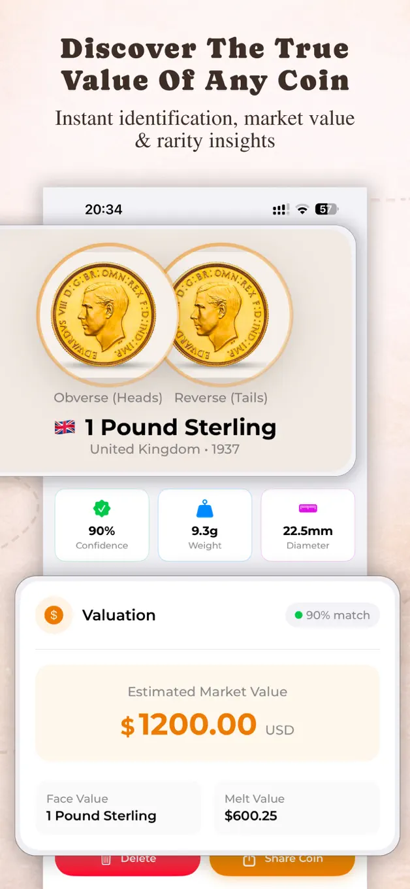
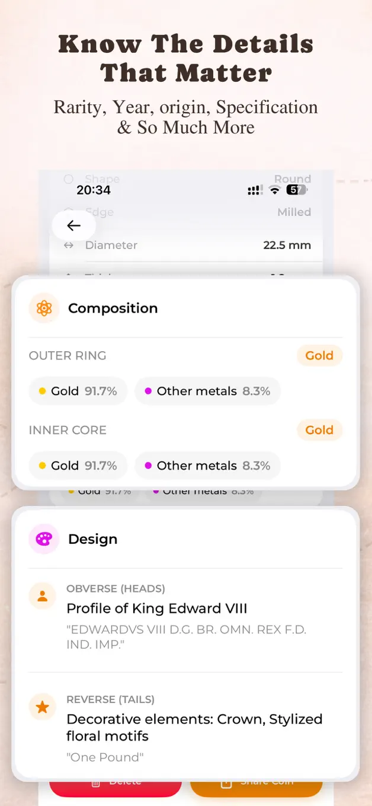
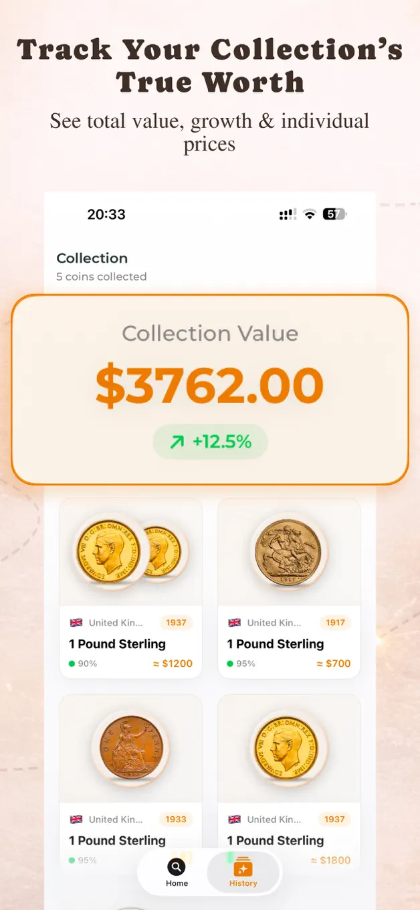

Identify the coin
Scan world currency, collector pieces and unusual finds from a clear photograph.
Coin Identifier & Collection
Photograph a coin to identify its country, year, denomination and composition, explore estimated value and rarity, and keep your finds in a digital collection.

What CoinScope does
CoinScope brings identification, numismatic context and collection tracking into one approachable app.
Scan world currency, collector pieces and unusual finds from a clear photograph.
See likely origin, year, denomination, composition, rarity and market context.
Save discoveries, organise favourites and track estimated values over time.
How it works
Capture both sides, review the identification and keep the result for your collection.
Take clear images of the obverse and reverse against a simple background.
Check the country, year, denomination, composition and rarity clues.
Add the result to your collection and monitor its estimated market value.
Inside CoinScope
Identification, history and collection tools travel with you.



Frequently asked
CoinScope is designed for coins from around the world, including modern currency, older pieces and many collector issues.
Yes. Clear photographs of both sides, including readable dates and mint marks, provide more evidence for a useful identification.
CoinScope provides an informative estimated range using the likely identity, condition, rarity and available market context.
No. Identification and value estimates are informational and do not replace certified authentication, grading or appraisal.
Yes. Add results to your digital collection so you can organise finds and follow their estimated value.
Take a photo, uncover the details and keep the history with the collection you are building.
Download CoinScope